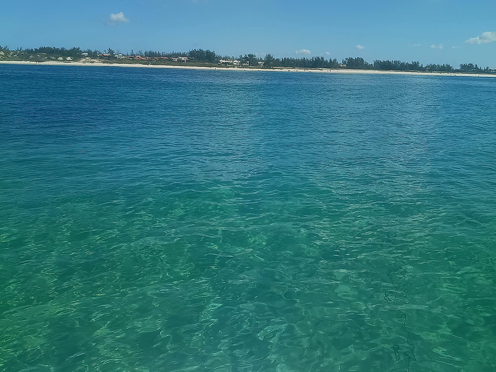
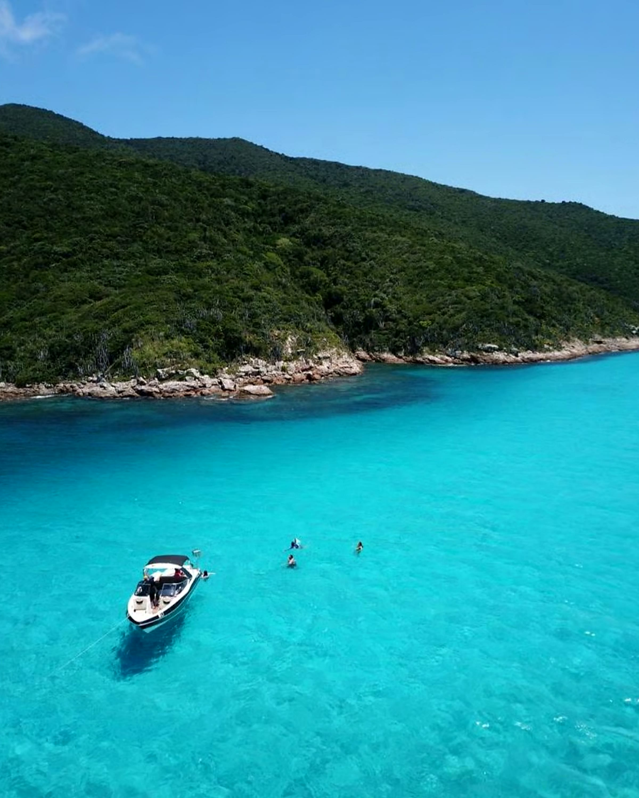
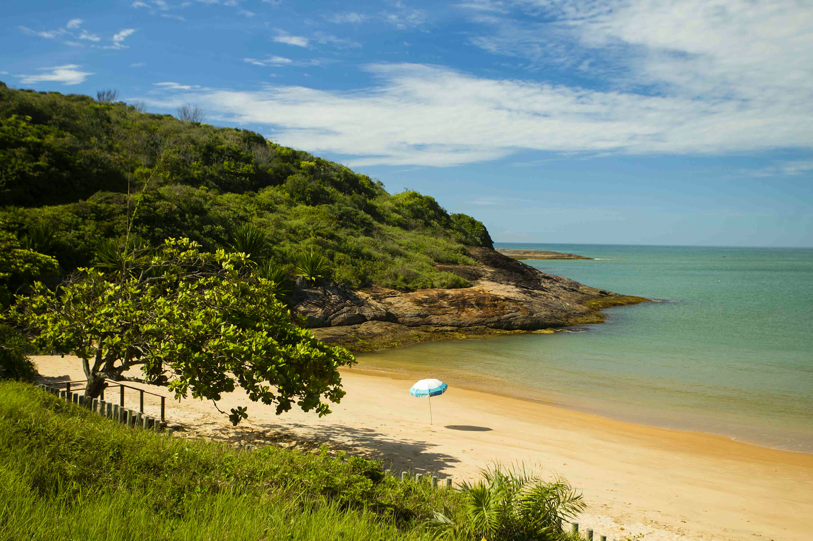
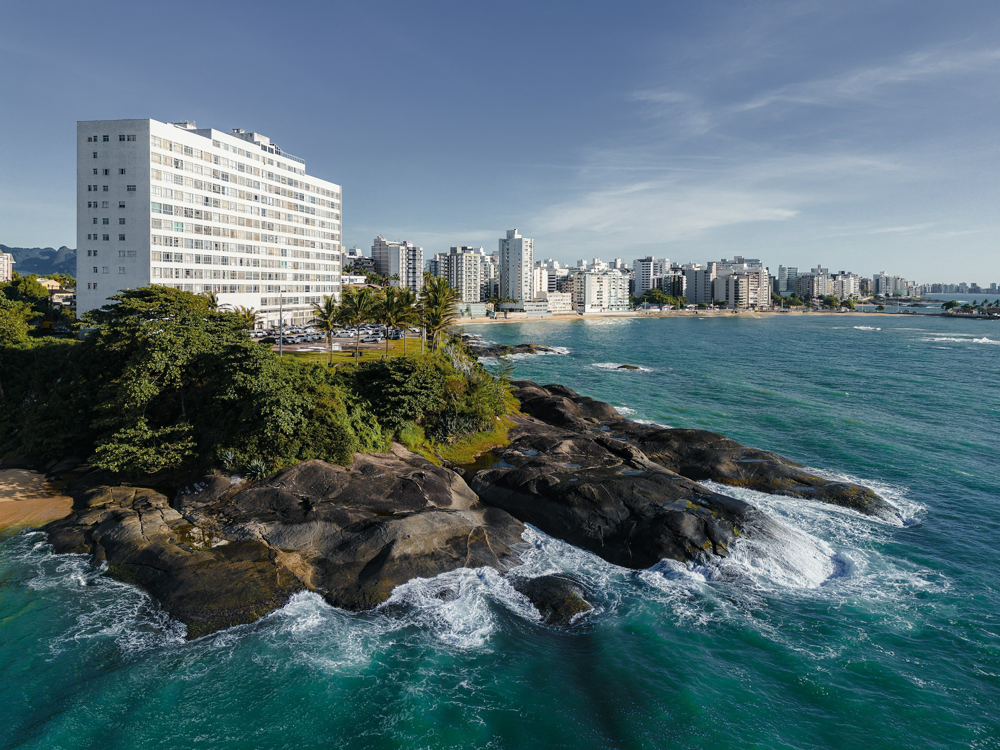
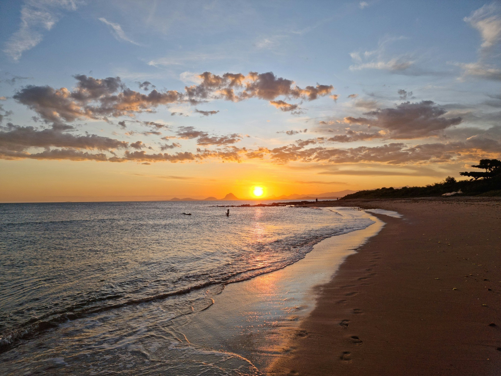
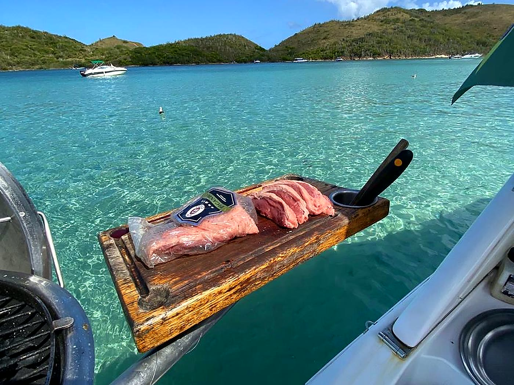
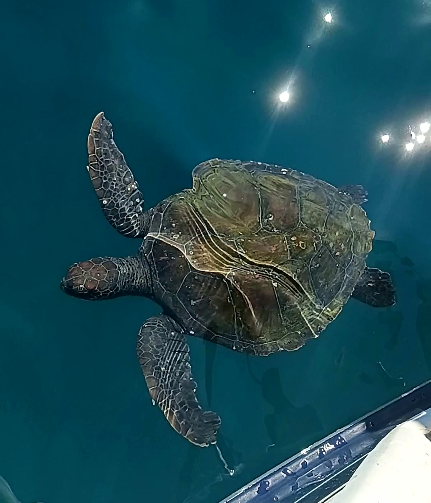
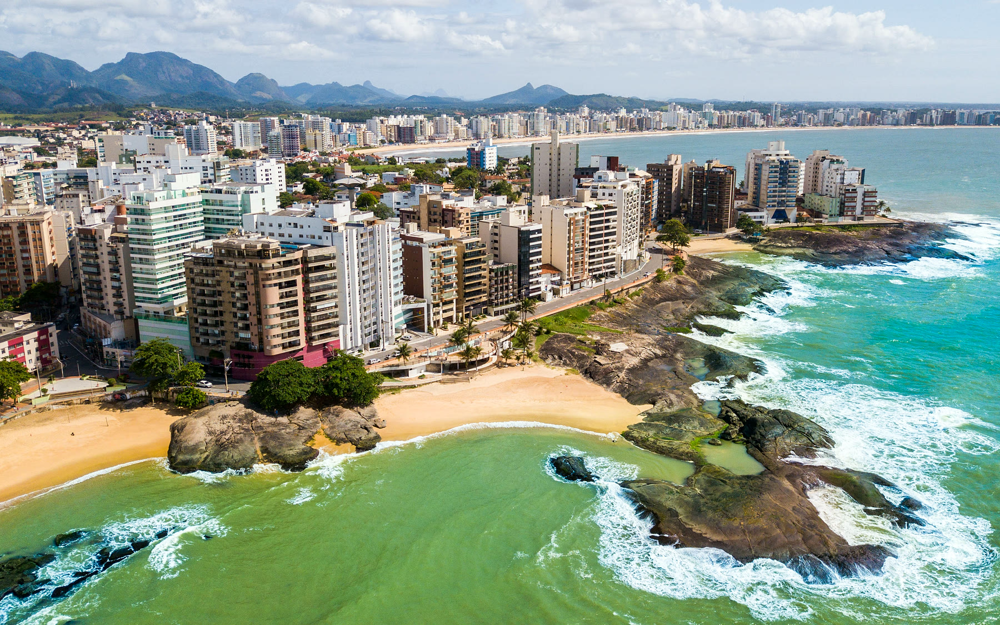

Três Ilhas e Setiba
Água cristalina, mergulho e tartarugas.


Saída do Centro para Três Ilhas, Setiba e Enseada Azul.
Você escolhe o destino e quanto tempo fica em cada parada.
Água cristalina, mergulho e tartarugas.

Bacutia, Peracanga e Guaibura. Mar calmo.

Castanheiras, Praia do Morro e Ermitão.

Aniversário, pedido ou pescaria entre amigos.

Churrasqueira, gelo e bebidas suas. Marinheiro que conhece cada ilha.



Atendimento direto pelo WhatsApp (27) 99819-7701.
Do Canal de Guarapari, na Av. Pedro Ramos, 50 — Centro.
Sim. Toda saída tem marinheiro habilitado pela Capitania dos Portos.
Pode. Leve suas bebidas, gelo e carnes. Tem churrasqueira a bordo.
Seguimos as orientações da Marinha. Sem condição de mar, o passeio é reagendado.